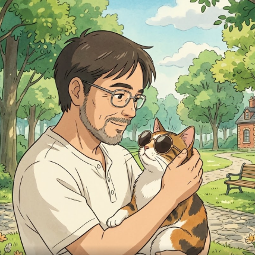

Nurse × Care Manager × Web Creator
薗田
30年超の看護・ケアマネ経験を土台に、AIとWebデザインの世界へ。
医療・福祉の深い知識と先端AIツールの実践力を掛け合わせ、
人の役に立つコンテンツとデザインを創り続けています。

AI Generated · nanobananaScroll to explore
宮崎県在住。看護師・介護支援専門員として病院・訪問看護・地域包括支援センターなど多岐にわたる現場で30年以上従事してきました。ICT・AIが医療福祉のDXを変えていくことを現場で感じ続け、2023年頃からAIツールの自主学習をスタート。
現在はオンラインのWebデザインスクールにて HTML・CSS・WordPress・Figma。CrowdWorksやCoconalaでのフリーランス活動も積極的に展開しています。医療・福祉領域の深い専門知識と、AIツールを実践的に使いこなす力が私の最大の強みです。
30年超の看護師・ケアマネ経験をベースに、医療・介護・福祉に関する情報を発信するYouTubeチャンネル。Google NotebookLMによる音声要約・インフォグラフィック作成、Gemini Genによる動画企画構成など、AIツールをフル活用したコンテンツ制作フローを確立。
チャンネルを見るAIで生成した画像を使ったオリジナル絵本・ストーリー動画チャンネル。nanobananaで手書きイラストをデジタル化・着色し、Veo3.1で動画化。Google AI Studioで作成したナレーション音声とSunoAI BGMを組み合わせた独自制作フロー。
チャンネルを見るWebデザインスクールの課題として制作した架空企業「SocialTech」のコーポレートサイト。レスポンシブデザイン・ハンバーガーメニュー・Flexboxレイアウトを実装。VS Code + GitHub で管理・提出。
コンテンツ制作の企画から完成まで、複数のAIツールを有機的に組み合わせた独自のワークフローを構築しています。医療福祉の専門知識と掛け合わせることで、他にはないコンテンツを生み出しています。
Webデザイン・バナー制作・SNSコンテンツ作成・AI画像生成・動画ナレーションなど、幅広くご対応可能です。医療・福祉・ヘルスケア分野のコンテンツは特に得意としています。
CrowdWorksやCoconalaからのご依頼もお待ちしています。お気軽にお声がけください。